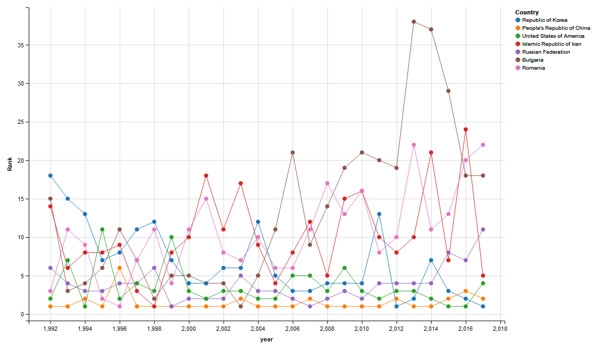
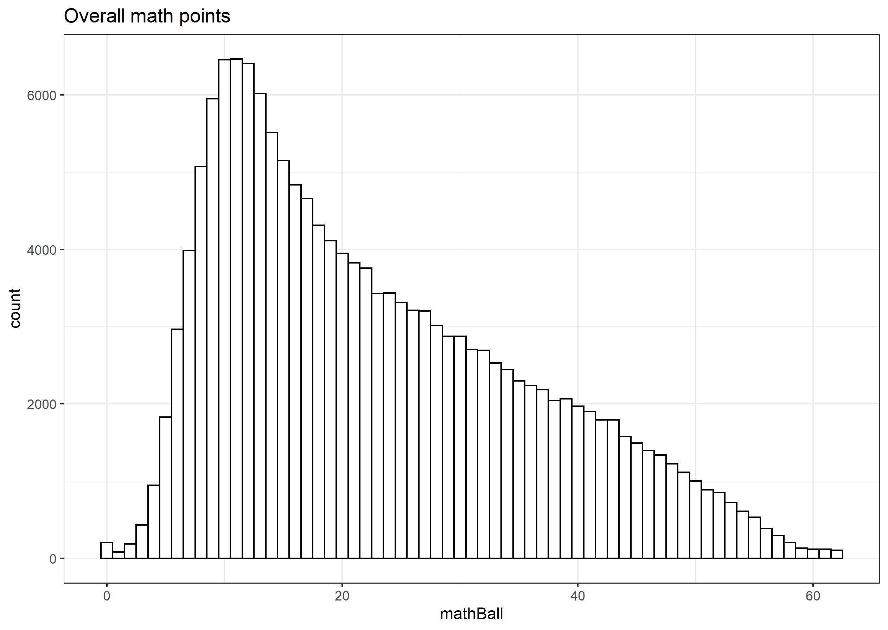
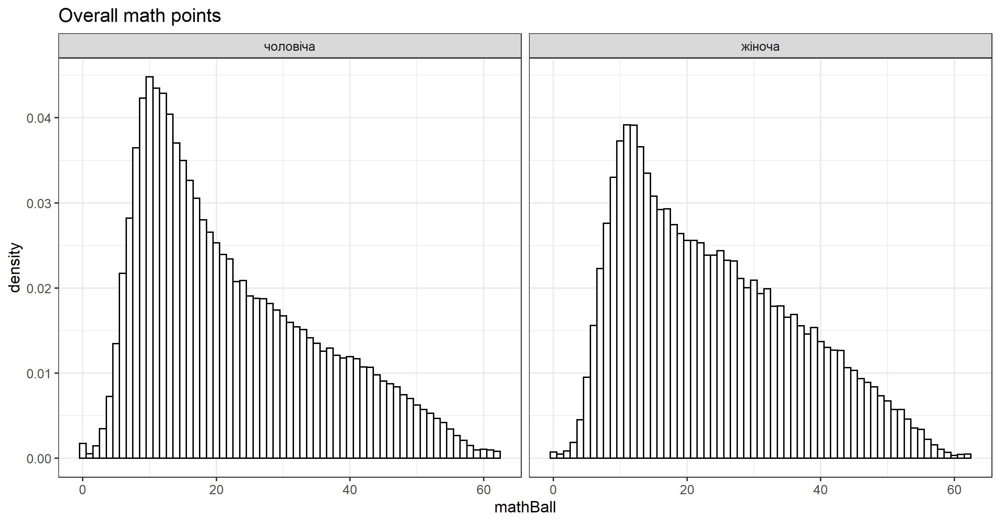
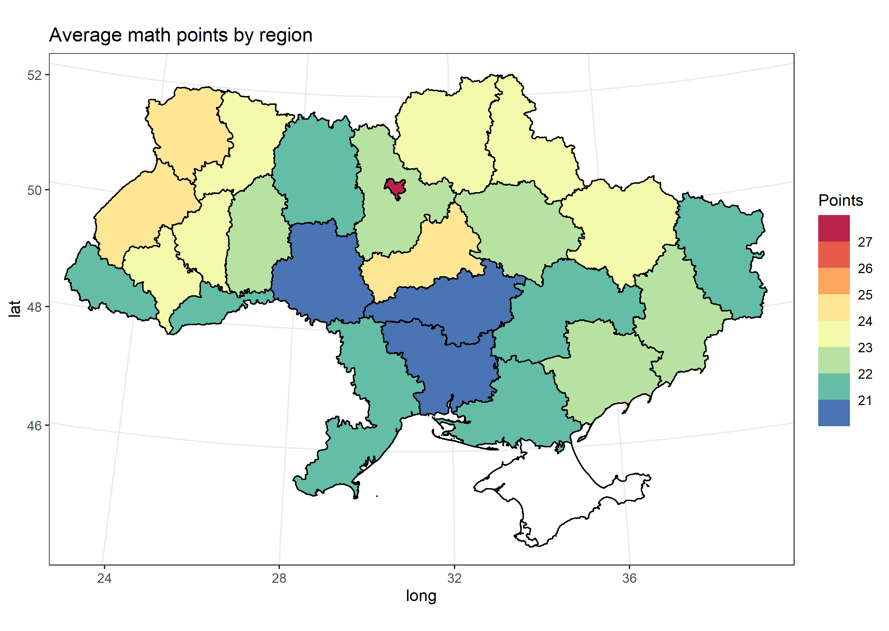
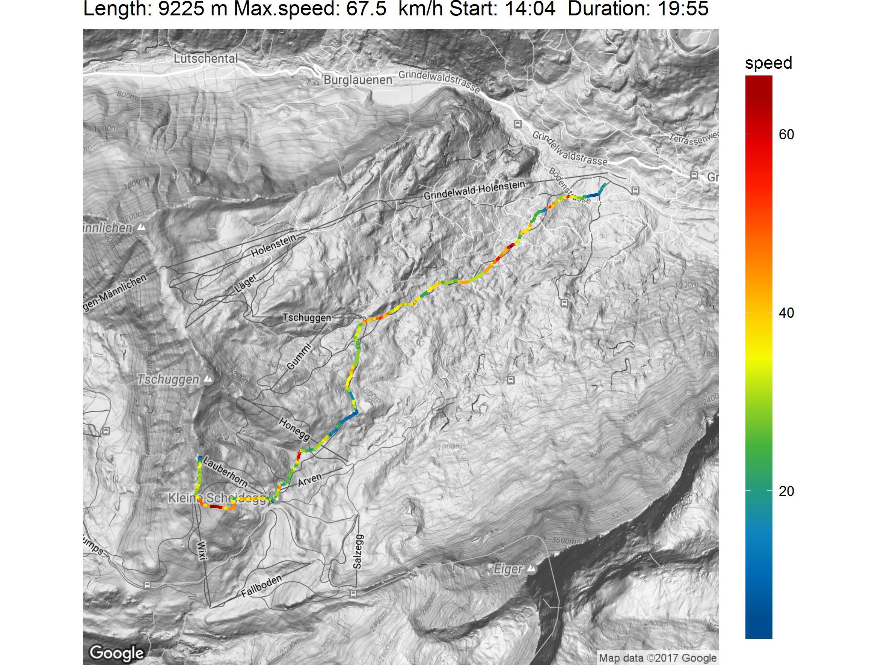
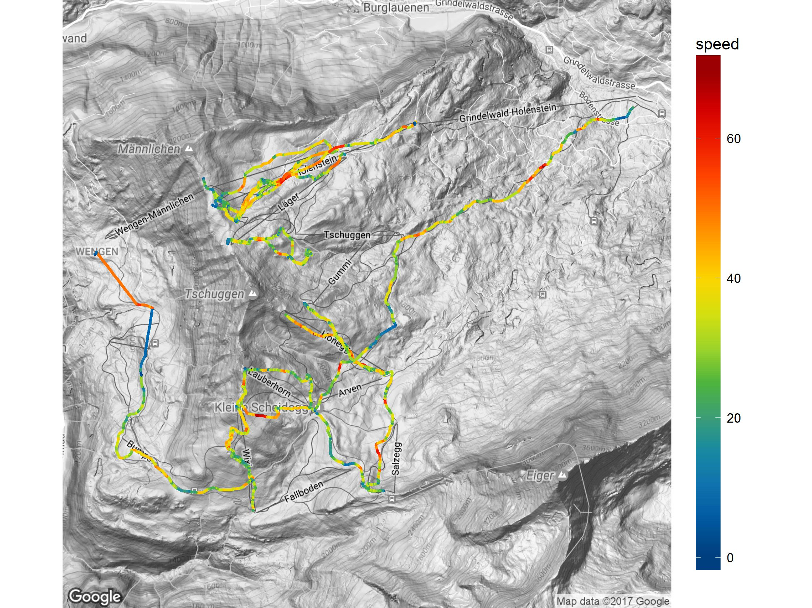

library(htmltab)
library(dplyr)
library(ggvis)
TBL = data.frame()
# grab the results of all teams from 1992 to 2017 years
for (j in 2017:1992){
baseurl = 'https://www.imo-official.org/year_country_r.aspx?year='
url = paste0(baseurl,j,'&column=total&order=desc&language=en')
tbl <- htmltab(url,which = 1, rm_nodata_cols=F)
tbl$year = j
TBL <- rbind(TBL, tbl)
}
for (k in 2:16){
TBL[,k] <- as.numeric(TBL[,k])
}
#average rank of the teams in the last 10 years
TBL %>% filter(year > 2007) %>%
group_by(Country) %>%
summarise(RANK = mean(Rank), POINTS = mean(Total)) %>% arrange(RANK)
# show the meddal set of the winning team
TBL %>%
filter(Rank == 1) %>%
arrange(`Awards >> G`) %>%
select(Country, year, `Awards >> G`, `Awards >> S`, `Awards >> B`)
# select countries with at least one appearance of Rank == 1
TBL %>%
group_by(Country) %>%
summarise(m = min(Rank,na.rm = T)) %>%
filter(m <= 1) %>%
select(Country) ->
countries
#show results of the teams with at least one team victory
ggvis(TBL) %>% group_by(Country) %>%
filter(Country %in% countries$Country) %>%
layer_paths(~year, ~Rank, stroke=~Country) %>%
layer_points(~year, ~Rank, fill=~Country)

Here we analyse the results of the Ukrainian secondary school students at their graduation exam. The full data contain information on plenty of subjects, I will focus only on raw math results. Raw file is available here.
# Since textual data are in cyrillic, proper Locale is required
Sys.setlocale("LC_CTYPE", "russian")
library(tidyverse)
library(RColorBrewer)
# This preprocessed file contains results of the math exam together
# with the gender and regional information of the student
# Original results of all subjects are available at https://zno.testportal.com.ua/stat/2019
data <- read_csv('zno2019math.csv')
First, let's see on overall data:
ggplot(data) +
geom_histogram(aes(x=mathBall), binwidth=1, fill='white',color='black') + theme_bw() +
ggtitle('Overall math points')#

Pretty disappointing.
What about gender difference?
ggplot(data) +
geom_histogram(aes(x=mathBall, y=..density..), binwidth=1, fill='white',color='black') + theme_bw() + facet_grid(.~SEXTYPENAME)+
ggtitle('Overall math points')

Finally, let's visualize these data on the map. At first, we need to get the map itself, i.e. coordinates of the regions.
# Coordinates of the regions are taken from https://gadm.org/
m <- readRDS('gadm36_UKR_1_sp.rds')
map <- fortify(m)
map$id <- sapply(map$id,as.numeric)
# Since the order of regions in spatial data and in the math data is not the same
# (mostly because of different latin and cyrillic alphabets), the 1-to-1 relation is given
regions <- c(1, 25, 17, 14, 13, 16, 15, 19, 18, 20, 12, 2, 26, 21, 23, 10, 5, 8, 11, 6, 3, 27, 7, 9, 4, 22, 24)
Second, let's calculate the mean result for each region.
data %>% group_by(REGNAME) %>% summarize(M=mean(mathBall)) -> y
And place in on map:
ggplot(map) +
geom_polygon(aes(x=long,y=lat,group=group,fill=y$M[regions[id]]),color='black') +
scale_fill_stepsn(colours=brewer.pal(11,'Spectral')[11:1], n.breaks=9) +
coord_map("stereographic",xlim=c(23.5,39),ylim=c(44.5,52)) +
guides(fill = guide_coloursteps(barwidth = 1.5, barheight = 10))+
theme_bw() +
# xlim(c(22.13,40.22))+ylim(c(44.37,52.4)) +
labs(fill = "Points") +
ggtitle('Average math points by region')

It is sad that only the capital city shows reasonable results. A lot of work has to be done by the Ministry of Education.
require(plotKML)
require(ggplot2)
require(ggmap)
checktrack <- function(gpx){
data <- readGPX(gpx)
return(length(data$tracks))
}
gettrack <- function(gpx, n = 1){
data <- readGPX(gpx)
track <- as.data.frame(data$tracks[[n]])
colnames(track) <- c('lon','lat','ele','speed','time')
track$t <- sapply(track$time,function(i) as.integer(as.POSIXct(i, format='%Y-%m-%dT%T')))
track$t <- track$t - track$t[1]
track$ele <- as.numeric(track$ele)
track$speed <- as.numeric(track$speed)*3.6 #kmh
return(track)
}
gmapszoom <- function(latrange, lonrange){
dy = 111100*(latrange[2]-latrange[1]);
dx = 111100*(lonrange[2]-lonrange[1])*cospi((latrange[2]+latrange[1])/360)
d = max(dx,dy)
zoom = 16-ceiling(log2(d/1045))
return(zoom)
}
dname = '...'
setwd(dname)
files = dir(pattern='*.gpx')
tracks = c()
snames = c()
lifts <- c()
for (i in 1:length(files)){
fname = files[i]
sname = paste0(substr(fname,9,12),substr(fname,14,17))
num = checktrack(fname)
if (num == 1){
tname = paste0('track',sname)
tmp = gettrack(fname)
is.lift <- T
if (tmp$ele[1] > tail(tmp$ele,1)) {
lifts <- c(lifts,F)
is.lift <- F
} else {
lifts <- c(lifts,T)
}
tmp <- transform(tmp, lift = is.lift)
assign(tname,tmp)
tracks = c(tracks,tname)
snames = c(snames,sname)
} else {
for (j in 1:num){
tname = paste0('track',sname,letters[j])
tmp = gettrack(fname,j)
is.lift= T
if (tmp$ele[1] > tail(tmp$ele,1)) {
is.lift = F
lifts <- c(lifts,F)
} else {
lifts <- c(lifts,T)
}
tmp <- transform(tmp, lift = is.lift)
assign(tname,tmp)
tracks = c(tracks,tname)
snames = c(snames,paste0(sname,letters[j]))
}
}
}
all.tracks <- data.frame(name=as.character(snames),map=NA,length=NA,speed=NA,lift=lifts)
jet.colors <- colorRampPalette(c("#003F7F","#007FCF", "#3FAF3F", "#FFFF00", "#FF7F00", "#FF0000", "#7F0000"))
tracklength <- function(track){
len = length(track$t)
dt = track$t[-1] - track$t[1:(len-1)]
dv = (track$speed[-1]+track$speed[1:(len-1)])/7.2
return(dt %*% dv)
}
for (i in 1:length(snames)){
sname = snames[i]
tmp = get(paste0('track',sname))
tmp$speed <- as.vector(runmed(tmp$speed,3))
max.speed = max(tmp$speed)
all.tracks$speed[i] = max.speed
#tmp$speed <- as.vector(runmed(tmp$speed,5))
len = tracklength(tmp)
all.tracks$length[i] <- len
all.tracks$height[i] <- tmp$ele[1] - tail(tmp$ele,1)
all.tracks$time[i] <- tail(tmp$t,1)
}
for (i in 1:length(snames)){
if (is.na(all.tracks$map[i])){
sname = snames[i]
tmp = get(paste0('track',sname))
lon = range(tmp$lon)
lat = range(tmp$lat)
zoom <- gmapszoom(lat,lon)
trackmap <- get_map(location = c(lon = mean(lon), lat = mean(lat)), zoom = zoom, maptype = 'terrain',color='bw')
assign(paste0('map',sname),trackmap)
all.tracks$map[i] = paste0('map',sname)
}
}
for (i in 1:length(snames)){
sname = snames[i]
data = get(paste0('track',sname))
map = get(paste0('map',sname))
len = all.tracks$length[i]
max.speed = all.tracks$speed[i]
starttime <- strftime(as.POSIXlt(data$time[1],format = '%Y-%m-%dT%T')+7200,format = '%H:%M')
duration <- tail(data$t,1)
length.time <- paste0(duration%/%60,':',duration%%60)
ggmap(map,extent='device') +
labs(title=paste('Length:',round(len,0),'m Max.speed:',round(max.speed,2),' km/h Start:', starttime,' Duration:',length.time)) +
geom_path(size=1,lineend='round',data=data,aes(x=lon,y=lat,col=speed)) +
scale_colour_gradientn(colours = jet.colors(25), guide = guide_colorbar(barheight=25))# +
#geom_path(size=1,lineend='round',data=tmp,aes(x=lon,y=lat,col=ele)) +
#scale_colour_gradientn(colours = jet.colors(25),guide = guide_colorbar(barheight=25))
ggsave(filename=paste0(dname,'_track',sname,'.jpg'),width=200,height=150,units='mm')
}
alltracks <- data.frame()
for (i in tracks){
tmp = get(i)
#tmp$speed <- as.vector(runmed(tmp$speed,5))
tmp$name = i
alltracks <- rbind(alltracks,tmp)
}
alltracks$t <- sapply(alltracks$time,function(i) as.integer(as.POSIXct(i, format='%Y-%m-%dT%T')))
alltracks$t <- alltracks$t - alltracks$t[1]
lon = range(alltracks$lon[!alltracks$lift])
lat = range(alltracks$lat[!alltracks$lift])
zoom = gmapszoom(latrange = lat,lonrange = lon)
allmap <- get_map(location = c(lon = mean(lon), lat = mean(lat)), zoom = zoom, maptype = 'terrain',color='bw')
p <- ggmap(allmap,extent='device')
p + geom_path(size=1,lineend='round',data=alltracks,aes(x=lon,y=lat,col=speed,group=name)) +
scale_colour_gradientn(colours = c(jet.colors(10)),guide=guide_colorbar(barheight=25))
ggsave(filename=paste0(dname,'_speedX.jpg'),width=200,height=150,units='mm')
p + geom_path(size=1,lineend='round',data=alltracks[!alltracks$lift,],aes(x=lon,y=lat,col=speed,group=name)) +
scale_colour_gradientn(colours = c(jet.colors(10)),guide=guide_colorbar(barheight=25))
ggsave(filename=paste0(dname,'_speed.jpg'),width=200,height=150,units='mm')


Some extra analysis can also be done:
> tapply(all.tracks$length,all.tracks$lift,sum) FALSE TRUE 49394.50 33686.25 > tapply(all.tracks$height,all.tracks$lift,sum) FALSE TRUE 7372.1 -6439.1 > tapply(all.tracks$time,all.tracks$lift,sum) FALSE TRUE 6135 12429So, during that particular day of skiing I did ~49 km of slopes with 7.3 km of total elevation drop in ~6100 seconds, and spent 12400 seconds on 'non-skiing' actvities (like lunch and lifts up).